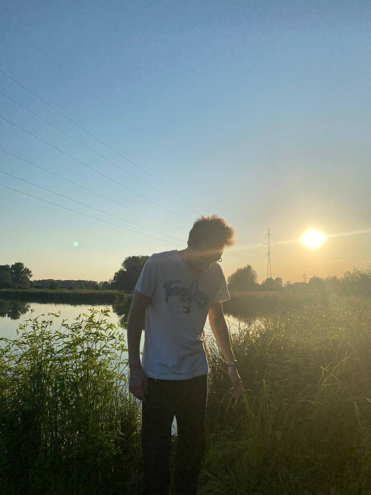

Обо мне

Гришин Никита
Место учебы: СНИУ им. Королёва
Направление: Информационная Безопасность Информационных Систем
Номер группы: 6211-100503D
VK: @ppdbavyss
Телеграм: @ppdbavyss
Почта: trabla04@mail.ru